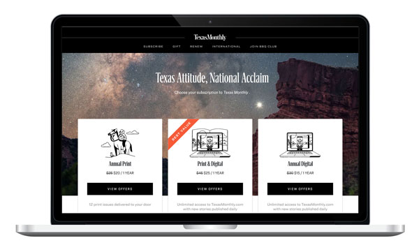
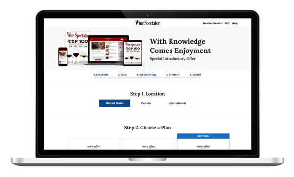
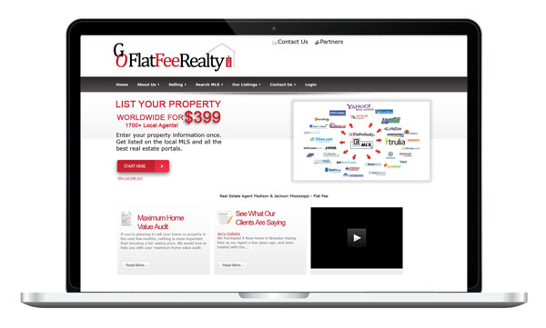
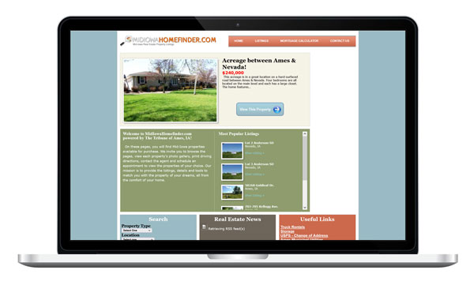
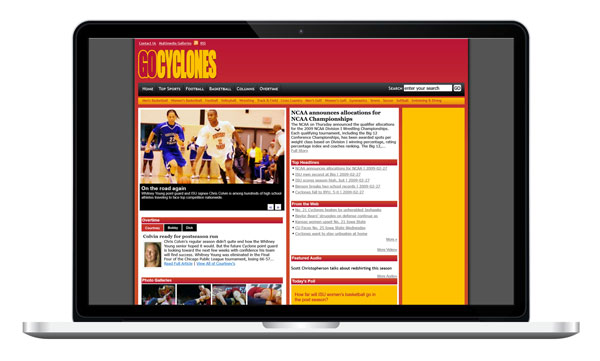
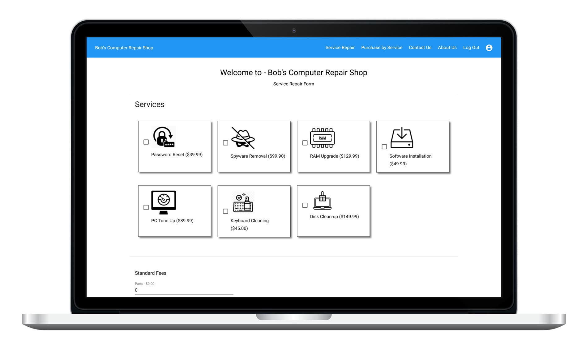
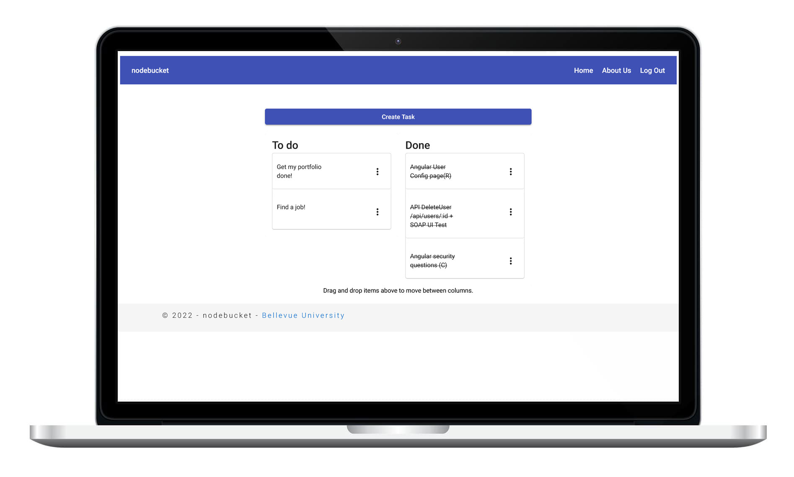

Professional Work / CDS Global
Texas Monthly
HTML / CSS / jQuery / Figma
I translated a supplied Figma design into HTML, CSS, and jQuery, then added the integration required for CDS Global's proprietary order-management system.
Web Developer
Project Archive
Older projects. Still worth a look.
A collection of earlier professional, client, independent, and academic work. Some projects are no longer active, but together they show the range of work that led to what I build today.
Professional + Client Work
Production subscription pages, client websites, and independent builds from earlier stages of my career.

Professional Work / CDS Global
HTML / CSS / jQuery / Figma
I translated a supplied Figma design into HTML, CSS, and jQuery, then added the integration required for CDS Global's proprietary order-management system.

Professional Work / CDS Global
HTML / CSS / jQuery / Figma
I converted a supplied Figma design into a working subscription page and connected it to CDS Global's proprietary order-management system.

Client Project
SilverStripe / PHP / MySQL / HTML / CSS
An e-commerce real estate site for a client in Mississippi. I built the front end from scratch and heavily customized the SilverStripe content-management system.
View archived site
Professional Work / Ames Tribune
PHP / MySQL / HTML / CSS
A real estate website built from scratch with a custom CMS. The layout also included dedicated sidebar space for advertising.
View archived site
Professional Work / Ames Tribune
PHP / MySQL / HTML / CSS
A sports website built from scratch with a custom CMS. The original layout reserved space in the header and sidebar for advertising.
View archived siteBellevue University
MEAN-stack projects that covered both application development and the planning process behind the code.

Academic Team Project
Angular / Node.js / Express / MongoDB / Angular Material
A team-built online computer repair shop. The project included personas, work estimates, wireframes, prototypes, development sprints, and twice-weekly stand-up meetings.
View source
Academic Project
Angular / Node.js / Express / MongoDB / Angular Material
A MEAN-stack task-management application for creating, tracking, editing, and deleting time-sensitive tasks. The project also covered personas, estimates, wireframes, prototypes, sprints, and stand-ups.
View sourceCurrent work
Back to selected projects